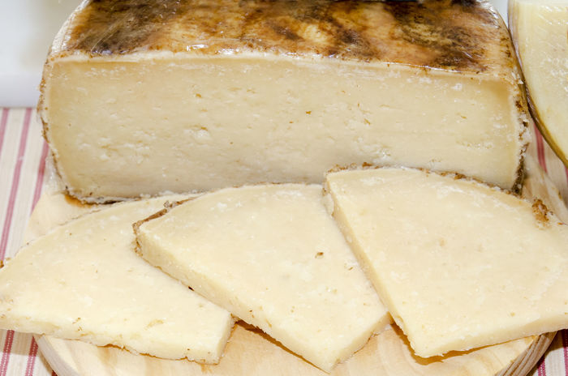

El curado de los quesos consiste en el añejamiento de los mismos, en un proceso en el que se secan y adicionalmente se aplican técnicas de conservación, como el salado o el ahumado. El tiempo necesario para considerar a un queso como curado puede variar de uno a otro, pero en general se requiere un mínimo de año y medio o dos años. El proceso de curado hace que obtenga una textura bastante más dura y seca, así como que se incremente la intensidad de su sabor, propiedad muy deseada entre los amantes del queso. Sin embargo, muchas personas no toleran los sabores fuertes, por lo que es fácil encontrar distintas variantes de curado para un mismo queso, catalogándolos normalmente como tiernos, semicurados y curados.
Ejemplos de quesos curados pueden ser el queso manchego o el gouda. Sin embargo, el gouda se suele exportar con un curado aproximado de medio año, mientras que en la Holanda Meridional se puede encontrar más añejo, pudiendo llegar a los dos años.

Puedes aprender a hacer tu propia masa para los espaguetis pinchando aquí